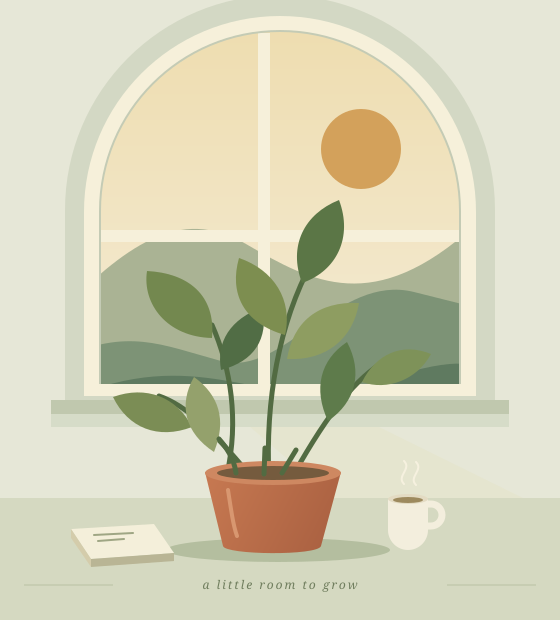

A QUIET AFTERNOON

THE SMALL THINGS
日子里的
小小收藏。
关于植物，关于观察，
也关于把时间还给自己。
01GREEN / 绿意从一盆植物开始。
把一盆绿植放在每天都能看见的地方。看新叶一点点舒展，看光线在叶片上移动。照顾它的几分钟，也成为照顾自己的一小段时间。
今日小事：给窗边的绿植转个方向。
02LIGHT / 光影收集一整个下午的光。
同一扇窗，每个时刻都有不同的风景。早晨的光轻轻落在桌沿，下午把书页染成蜂蜜色。不着急按下快门，先安静地看一会儿。
今日小事：找到家里你最喜欢的一束光。
03PAUSE / 留白给自己一个什么也不做的片刻。
泡一杯热茶，把手机翻过来。让那些还没做完的事先等一等。留白不需要安排得很隆重，只是允许自己在这一刻，慢下来。
今日小事：留十分钟，不安排任何事。
A LITTLE ABOUT THIS CORNER
一个小角落，也可以装下热爱。
这里是「一隅」，一份关于日常的虚构手记。
愿你也能在自己的生活里，找到一处自在生长的小天地。